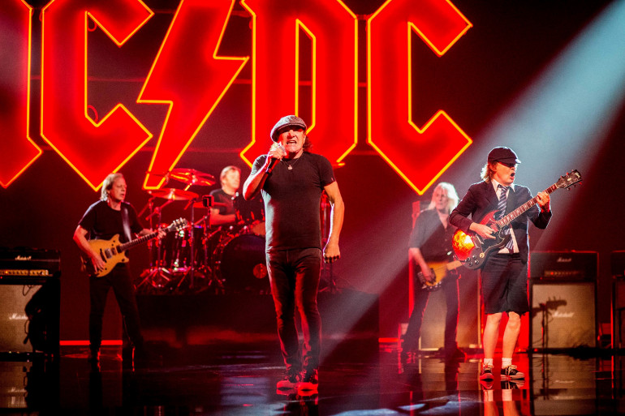

Derniers Articles d'Actualité
AC/DC lance son whisky en édition limitée
Date de publication : 09/10/2023

Pour les fans de rock et les amateurs de whisky de qualité, voici une excellente nouvelle : AC/DC
vient de dévoiler sa propre édition limitée de whisky en collaboration avec Ballantine. De plus, il
est déjà disponible dès à présent, doublement réjouissant !
Pour en savoir plus, lisez l'article complet sur notre site source :
Lire l'article
AC/DC : retour triomphal
Date de publication : 09/10/2023

Le groupe AC/DC est retourné sur scène après sept ans d'absence lors du Power Trip festival le samedi
dernier. C'était une occasion spéciale pour le chanteur Brian Johnson, dont la dernière performance
avec le groupe remontait à septembre 2016 à Philadelphie, à la fin de la tournée Rock or Bust, après
79 concerts. Par la suite, les Australiens avaient fait appel à Axl Rose, le chanteur de Guns N'
Roses, pour assurer les 22 dernières dates en raison de la perte d'audition de Brian Johnson.
Pour en savoir plus, lisez l'article complet sur notre site source :
Lire l'article
AC/DC dévoile son nouveau line-up
Date de publication : 11/09/2023

Phil Rudd, le batteur, n'a pas été impliqué dans la nouvelle phase d'AC/DC. En octobre, le groupe de
hard rock australien s'est produit au cours d'un festival californien aux côtés de Metallica, Guns
N' Roses, Iron Maiden, et Tool. Il s'agissait de leur premier concert en sept ans.
Pour en savoir plus, lisez l'article complet sur notre site source :
Lire l'article